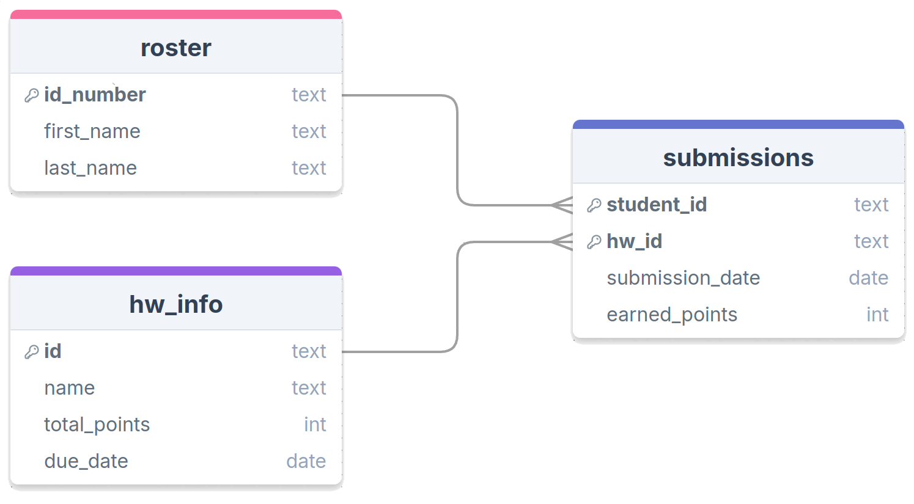

Join Me
Jed Rembold
Wednesday, September 19, 2024
Announcements
- HW3 due tomorrow night!
- I’m still working on HW2 feedback. Hopefully by tomorrow afternoon
- Still in Ch 7 on Monday
- First test is a week from today!
- Study materials posted on website! (Study guide and old test)
- Do you want the cereal data to follow along? You can find it here
- Polling today: polling.jedrembold.prof
Understanding Check
Suppose you have a table of items with the schema shown below and wanted to find the most common difference between Price A and Price B. You are looking for bargains, so in the case of a tie, you’d like to know the biggest. Which query will deliver on your wish?
CREATE TABLE rev (
"name" TEXT,
"pa" NUMERIC(4,2),
"pb" NUMERIC(4,2)
);SELECT mode(pb) - mode(pa) AS com_dif
FROM rev
ORDER BY com_dif;SELECT
mode() WITHIN GROUP (ORDER BY pb) -
mode() WITHIN GROUP (ORDER BY pa)
FROM rev;SELECT
mode() WITHIN GROUP (ORDER BY (pb-pa))
FROM rev;SELECT
mode() WITHIN GROUP (ORDER BY (pb-pa) DESC)
FROM rev;Joinery
Linking Tables
- Our whole idea of breaking apart data across multiple tables was prefaced on the fact that we could pull it back together when needed
- There is nothing special about the linkages: we can link any columns that we want
- The act of collecting data from multiple tables based on particular rows and columns is called a join in SQL

Creating the Join
- A join pulls information from multiple tables into a new table (since all queries return a table)
- The columns that are matched across tables are called keys
- The general idea is then to:
- Set up your selection as usual from a single table
- Join to that table another table
- Specifying what columns in each table will act as keys along with a
conditional relating them
- Most common condition is equality, but anything is allowed
SELECT * FROM |||table A|||
JOIN |||table B|||
ON |||table a|||.|||key column||| = |||table b|||.|||key column|||;Column Names
- When you start refering to multiple table names in your query, you
might get overlapping column names
- Columns names must be unique within a table but might be the same across tables
- To avoid ambiguity, you can preface a column name with the table it is coming from, separated by a period
- This is useful both for selecting the join key columns, but also for selecting particular columns you want out of the joined table
SELECT tab1.name, tab1.age, tab2.name
FROM tab1
JOIN tab2 ON tab1.age = tab2.age;Join Types
(Inner) Join
- The basic join only keeps rows from table 1 and table 2 that matched
on the given column keys
- This is also called an inner join
- Any row in table 1 that had no counterpart in table 2 is left out
- Identically for any row in table 2 that had no counterpart in table 1
- The key take-away is that it keeps what was in both tables
- If a value appears twice in one table, it will be duplicated in the
joined table as well
- One reason that many times people try to join on columns that hold unique values, but not always necesarry
Inner Join Example Query
SELECT *
FROM facebook
INNER JOIN linkedin
ON facebook.name = linkedin.nameInner Join Visualized
Left and Right Join
- Sometimes, you don’t want to include only the rows that were in both tables
- Maybe you want all the rows from one table, but joining the other data when it is available
- In these cases, you can use a
LEFT JOINorRIGHT JOINLEFT JOINis decidedly the more common, and you can make anyRIGHT JOINaLEFT JOINjust by flipping the table ordering
- Rows still need to have the same number of columns, so
NULLvalues will be inserted for the secondary table columns if no match is found
Left Join Example Query
SELECT *
FROM facebook
LEFT JOIN linkedin
ON facebook.name = linkedin.nameLeft Join Visualized
FULL OUTER JOIN
- On occasion, you just want all the data from both tables
- Matching where possible
- But keeping data from both left or right tables if no match
- In these cases, a
FULL OUTER JOINwill do what you want- Essentially does a
LEFT JOINfollowed by aRIGHT JOINwith the existing table
- Essentially does a
- Anything without a match is still represented with
NULLvalues
Full Outer Join Example Query
SELECT *
FROM facebook
FULL OUTER JOIN linkedin
ON facebook.name = linkedin.nameOuter Join Visualized
Cross Join
- Lastly, sometimes you want to see all the possible
combinations between the rows of two tables
- Sometimes called a cartesian product
- A
CROSS JOINwill return a table of all of these possibilities - Could imagine cross joining all of the values with the suits to generate your standard 52 card playing deck
- These can get very large very fast!
- Do not run on tables of millions of rows!
- You do not need a matching key for cross joins! They operate by row.
Cross Join Example Query
SELECT *
FROM facebook
CROSS JOIN linkedinCross Join Visualized
Extending Join Queries
- Envision any joins as just creating the table that your query is
acting on
- They happen before any other part of your query
- Thus you can still:
- Filter the rows
- Select specific columns
- Order the results
- Etc.
Practice Time
The Situation
- Suppose you have a database containing the three tables shown below
- You can answer all of the following questions just from this image,
but if you like, you can also access mock data for these tables here
- This data will be added to a
lec7schema, and thus will needlec7prefacing table names
- This data will be added to a

Practice Question 1
First names of students who have submitted any assignment?
Practice Question 2
Student ID and name of the assignment for all perfect scores?
Practice Question 3
How many students have submitted nothing? How many assignments have no submissions?
Practice Question 4
What is the most common number of days to submit an assignment late?
Practice Question 5
How many total combinations of students and assignments?